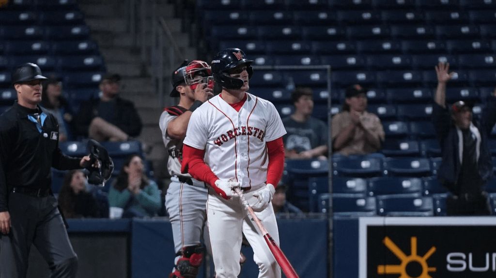

Fecha: 8 de junio de 2025
 A veces, una hazaña en el béisbol nos deja con la boca abierta. El sábado por la noche, Roman Anthony hizo precisamente eso. El principal prospecto de la MLB disparó un grand slam de 497 pies que dejó al Polar Park de Triple-A Worcester en trayectoria hacia Boston. Se puede afirmar que muchos de los aficionados que asistieron a la victoria de Worcester por 10-4 sobre Rochester estaban allí para ver al jardinero de 21 años, sobre todo en medio de las especulaciones sobre su posible llegada a las Grandes Ligas. El grand slam, que salió disparado de su bate a 115.6 mph, valió la pena el precio de la entrada y mucho más. Marca el jonrón más largo registrado por Statcast en cualquier categoría esta temporada. De hecho, en las Grandes Ligas, solo Nomar Mazara, CJ Cron, Giancarlo Stanton y Christian Yelich han conectado jonrones más largos desde 2015 .
← Volver al inicio